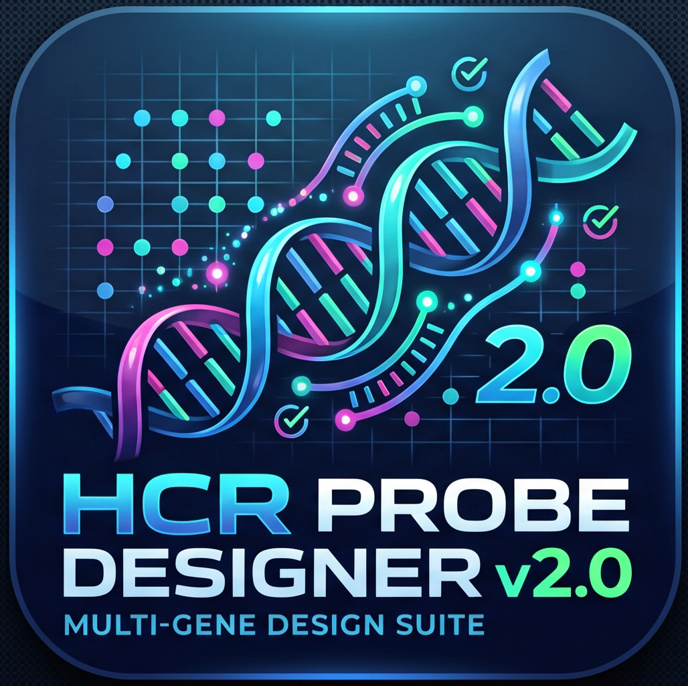
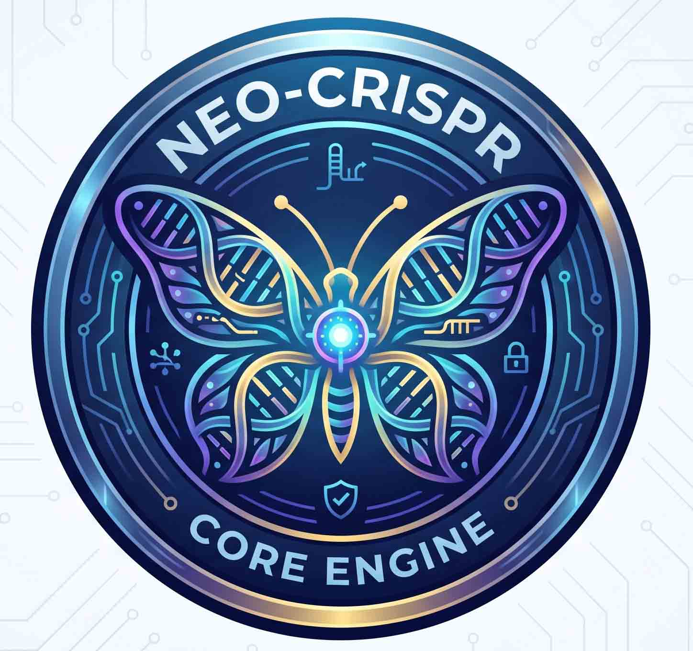
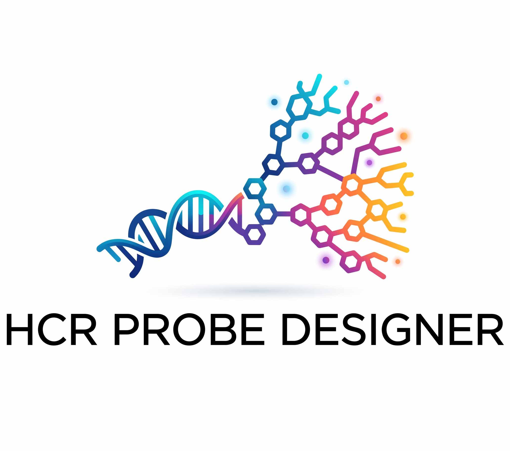
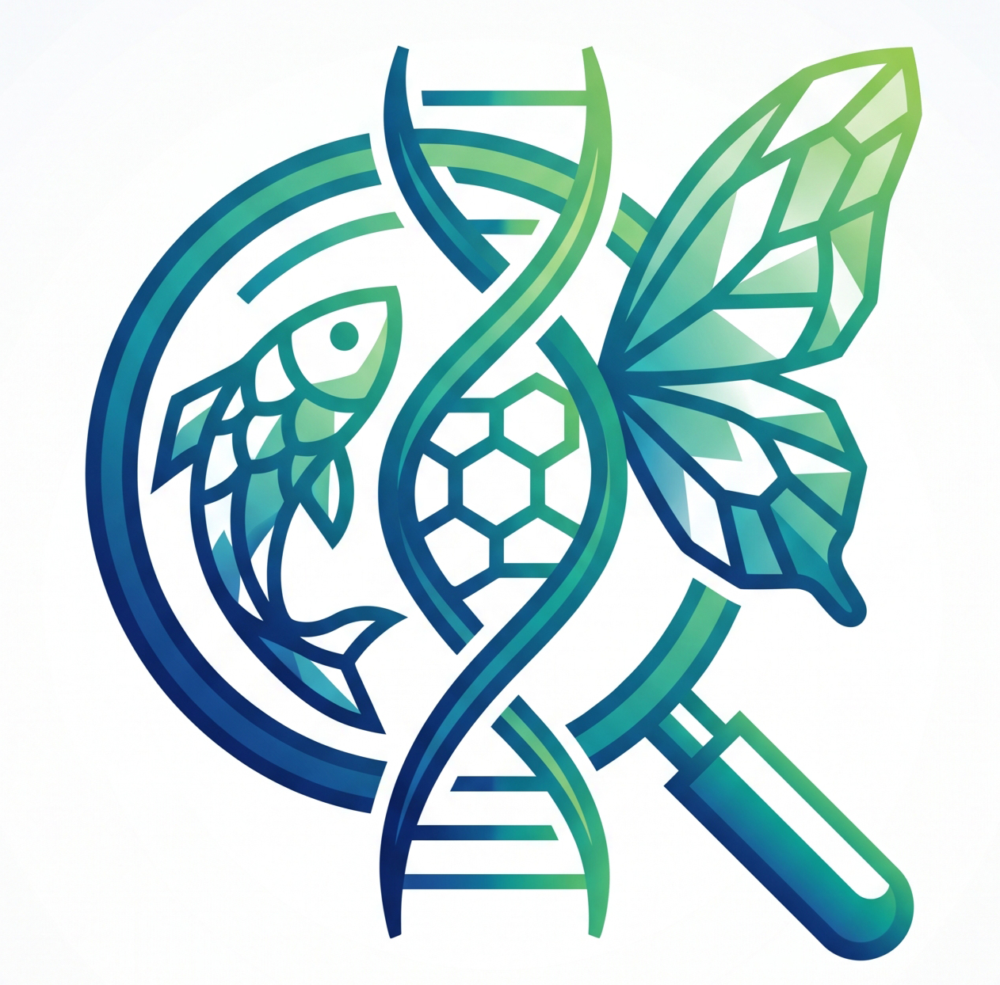
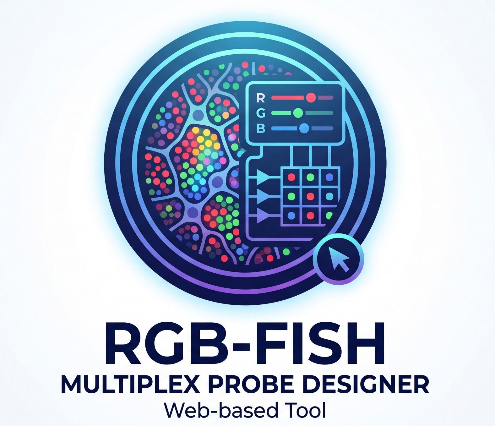
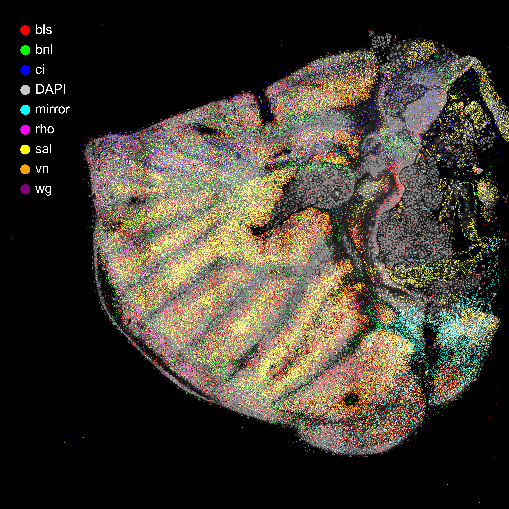
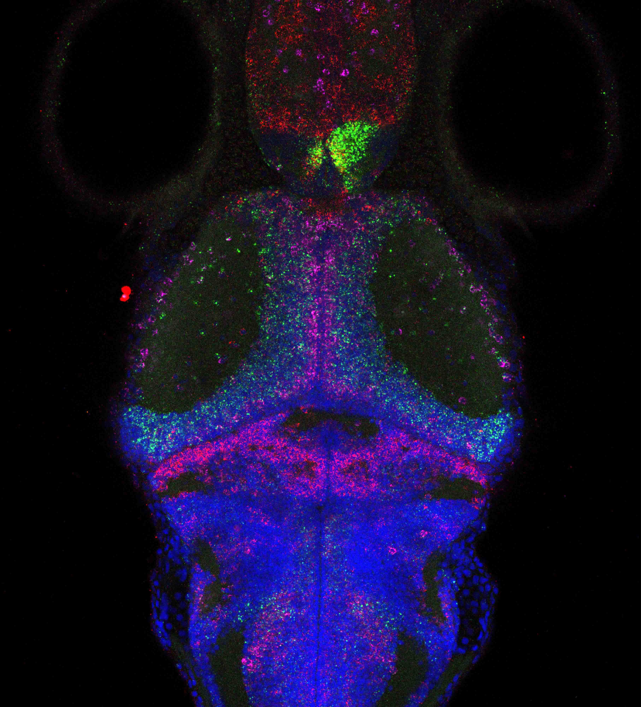

CrispCutNew
Ready-made CRISPR guides for every protein-coding gene in a genome, each checked for off-target cuts, plus primers to sequence the edited site. Starting with Bicyclus anynana. Search a gene and get guides you can order.

HCR Probe Designer v2.0New
The multi-gene version of the HCR Probe Designer. Design probes for up to 20 genes at once, each with its own amplifier and settings. The app scores probe sets, picks the best non-overlapping combination, can check specificity against a transcriptome, and writes an IDT oPools order file.
RAMFISH StudioNew
All five tools of the RAMFISH Software Suite in one browser app: import and normalize, rough and fine alignment, spot counting, and merging channels. Everything runs on your own computer, so your images never leave it.
Eyespot SimulatorNew
Simulate how butterfly eyespots form in Bicyclus anynana, then knock out genes in patches of the wing (like CRISPR mosaics) and watch how the pattern changes. Runs fast GPU-ready math (JAX) under the hood.
RAMFISH Software Suite
The full command-line pipeline for multiplexed spatial biology: evens out signal across rounds, aligns images, and counts single mRNA spots to build accurate RNA profiles.

NEO-CRISPR
A tool for designing and analyzing precise CRISPR genome editing experiments.

HCR Probe Designer
The original single-gene designer for Hybridization Chain Reaction (HCR) probes. It makes the probe pairs, picks the amplifier and formats the sequences, ready for multiplexed in situ experiments.

HCR Probe Finder
Search the lab's HCR probe sets, or pick ready-made probe pairs for any gene in Bicyclus anynana and zebrafish, including pairs for single splice variants. Choose B1, B2 or B3 and a dye, then download an IDT-ready oPool sheet.

RGB Multiplex FISH Probe Designer
Detect up to 6 genes with only 3 amplifiers by giving each gene its own color mix. This app designs the probes and the color combinations for you.

RAMFISH Merger
Merge up to 30 single-channel FISH images into one colorful composite, right in your browser. Adjust background, brightness curve (gamma) and the legend as you go.

RAMFISH Fine Aligner
Corrects the small stretching, swelling and warping that tissue goes through between imaging rounds, so every round lines up cell for cell.